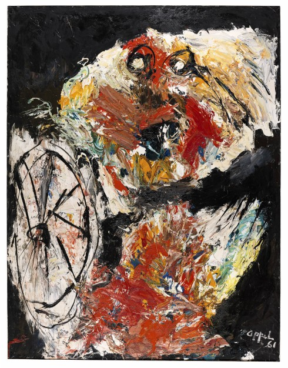

Karel Appel
Der abstrakte Blick
Das Emil Schumacher Museum in Hagen wirft nun aus Anlass seines zehnten Todestages in Kooperation mit der Karel Appel Foundation, Amsterdam, sowie dem Gemeentemuseum Den Haag, einen neuen Blick auf das international bedeutende Werk. Karel Appel wird bisher besonders mit der Künstlergruppe CoBrA verbunden, konnte jedoch auf sechzig Jahre künstlerischen Schaffens zurückschauen. Sein Werk lässt sich daher keinesfalls auf die nur drei Jahre bestehende und nur lose verbundene Künstlergruppe festlegen. Die Ausstellung zeigt das breite Spektrum des Malers, angefangen bei seinen frühen Bildern, die durch die Kunst von Kindern inspiriert ist, über Interpretationen klassischer Themen wie Akt, Porträt und Landschaft in gestisch-expressiver und manchmal fast abstrakter Form. In ihnen zeigt sich Appels abstrakter Blick auf die reale Welt. Die Hagener Retrospektive entdeckt auch Überraschendes im Werk und ist Teil einer breiten internationalen Wiederentdeckung von Karel Appel mit Museumsausstellungen in Paris, Den Haag, München und Washington.

Karel Appel Der abstrakte Blick 28. August 2016 bis 15. Januar 2017
Karel Appel Der abstrakte Blick 28. August 2016 bis 15. Januar 2017